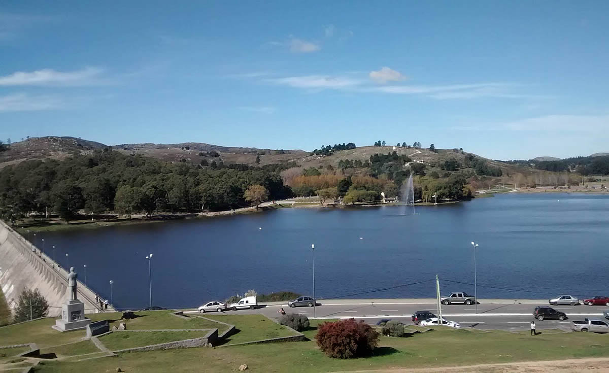
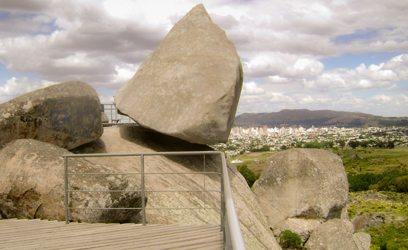

TANDIL TURISMO

CIUDAD DE TANDIL, PROVINCIA DE BUENOS AIRES. ARGENTINA
PRINCIPALES DESTINTOS TURISTICOS
Lago del Fuerte
Es casi una tradición darse una vuelta por el dique Del Fuerte, un paseo en Tandil que los propios tandilenses recomiendan y disfrutan por la belleza del entorno y los numerosos espacios pensados para entretener a toda la familia. Está ubicado al pie del Parque Independencia, un mirador natural de la ciudad por su ubicación privilegiada.
La famosa piedra movediza se cayó en 1912. Sin embargo, todavía se mantiene vigente su historia e incluso existe un proyecto para volver a ponerla en su viejo lugar…